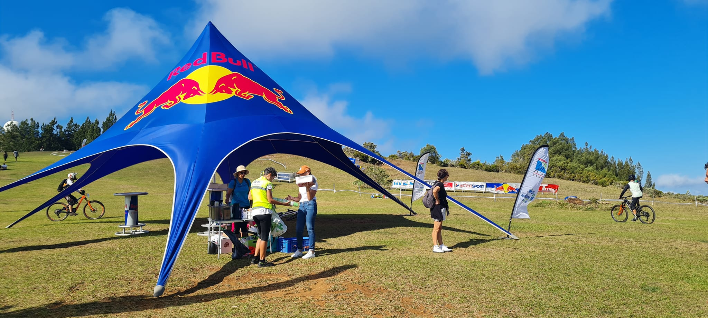
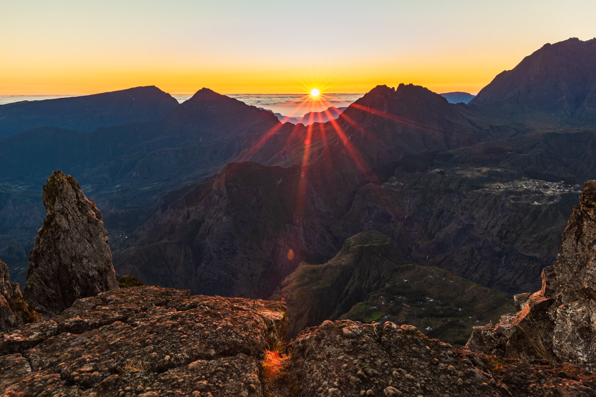

C'est mon père qui m'a donné la passion du guidon, je faisais déjà du vélo sans les petites roulettes à 2ans. J'ai toujours fais du vélo du vtt classique ou du BMX. Ce n'est qu'en 2016 que j'ai eu mon premier vélo d'enduro, je me suis donné à fond depuis cette date la.
Dès que j'ai eu mon vélo j'ai décidé de m'incrire dans un club et faire des compétition, cela ma permis de participer à différentes courses. Ma course preféré c'est l'Enduro Marinès Voyage, l'une des seule courses qui réunie des champions sur l'île.
Malheursement je n'ai jamais pu participé à la mégavalanche, la plus grosse course de l'île et qui est connu au niveau mondial. C'est dans ces moments que l'on se rend compte que c'est un sport qui est très physique mais aussi q'il y a beaucoup de contraintes mécaniques. Mais j'ai la chance de pouvoir pratiquer ce sport qui me permet de voir des endroits magnifiques sur l'île. Les spots sont: Le Maïdo, Le parc du Colorado, Piton Saint-Leu, ... Voici un exemple de paysage que l'on peut voir:
Mon premier podium sur une compétition, j'ai finis 3ème sur l'enduro Marinès Voyage 2016
Voici un peu mon style de pilotage
Voici la dernière fois que j'ai roulé avant mon départ en métropole